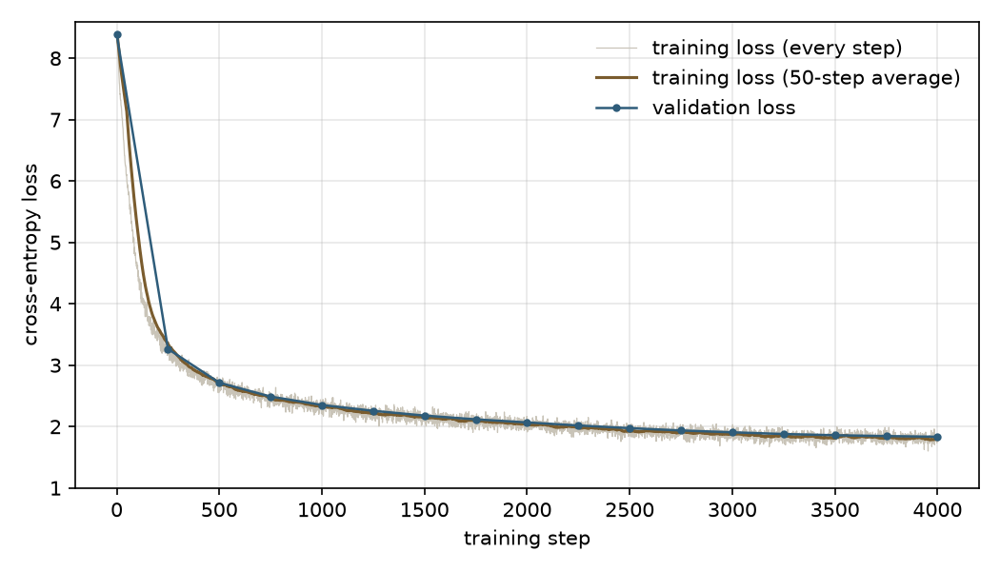

练习 01：从零写一个小 LLaMA
用大约 200 行 PyTorch 写一个 1200 万参数的语言模型，在儿童故事上训练四五十分钟，看它怎样从胡言乱语学会讲故事
一、要做的是什么
语言模型只做一件事：给它一段文字，它猜下一个词是什么。它给出的不是一个词，而是词表里每个词的概率，比如"Once upon a"后面接"time"的概率是 95%，接"day"是 2%，等等。从这个分布里挑一个词接上去，再让它猜下一个，反复做，就生成了一段话。ChatGPT 也是这样一个词一个词生成的，只是大得多。
模型一开始什么都不会，它的参数（几百万个数字）是随机的，猜出来的是乱码。训练就是给它看大量真实文本，每猜错一次就把参数往"猜得更准"的方向调一点点。调几千次之后，它就学会了语法、常见的情节、人物的名字。
这次练习分四步，每一步对应一个文件：
- 准备数据（prepare.py）：下载故事，把文字切成模型能处理的小单位，换成数字。
- 写模型（model.py）：按 LLaMA 的结构搭一个小 Transformer。
- 训练前检查（check.py）：确认模型的形状、初始状态都对，量一下速度。
- 训练和生成（train.py、generate.py）：训练 4000 步，每隔一段时间让它写一个故事，看它的进步。
为什么叫"小 LLaMA"？LLaMA 是 Meta 发布的一系列开源大模型，后来很多开源模型（Qwen、DeepSeek 等）沿用了它的结构。这里的模型和 LLaMA 的零件完全一样，只是尺寸小得多：LLaMA 3 的 8B 版本有 80 亿参数，这里只有 1200 万，小了六百多倍，所以在一台笔记本上不到一小时就能训练完。
二、准备数据
数据：TinyStories
TinyStories 是微软研究院 2023 年发布的数据集，里面是用 GPT-3.5 和 GPT-4 生成的几百万篇儿童故事，只用三四岁小孩认识的词。作者想看看：如果语言足够简单，很小的模型能不能学会写通顺的故事。答案是能，所以它很适合做这种练习。这里只用了其中四分之一，约 53 万篇。一篇故事长这样：
One day, a little girl named Lily found a needle in her room. She knew it was difficult to play with it because it was sharp. Lily wanted to share the needle with her mom, so she could sew a button on her shirt. ……
分词：把文字变成数字
模型只能处理数字，所以先要把文字切成小块（叫 token），每个 token 对应一个编号。切法有很多种：按字母切，序列会很长；按整词切，词表会很大，还会遇到没见过的词。现在的模型都用折中的办法，叫 BPE（字节对编码）：先把文字拆成单个字符，然后统计哪两个相邻的块一起出现得最多，就把它们合并成一个新块，反复合并，直到块的种类达到设定的数目。这样常见的词（the、little）会变成一个 token，少见的词会被拆成几块。
这里把词表大小设成 4096，也就是一共有 4096 种 token。BPE 的合并过程在后面的练习 02 里会一步步手写，这里先用现成的 tokenizers 库，8 秒就能训练好。下面是 prepare.py 中训练分词器和编码数据的部分：
# 1. Train a byte-level BPE tokenizer (lab 02 writes BPE by hand; here a library is used for speed)
t0 = time.time()
tok = Tokenizer(models.BPE())
tok.pre_tokenizer = pre_tokenizers.ByteLevel(add_prefix_space=False)
tok.decoder = decoders.ByteLevel()
trainer = trainers.BpeTrainer(vocab_size=VOCAB_SIZE, special_tokens=["<|endoftext|>"],
initial_alphabet=pre_tokenizers.ByteLevel.alphabet())
tok.train_from_iterator(train_texts, trainer=trainer)
tok.save(os.path.join(OUT, "tokenizer.json"))
print(f"tokenizer trained: vocabulary size {tok.get_vocab_size()}, took {time.time()-t0:.0f}s")
example = "Once upon a time, there was a little dog named Max."
enc = tok.encode(example)
print("sentence: ", example)
print("tokens: ", enc.tokens)
print("token IDs:", enc.ids)
# 2. Encode every story; stories are separated by the special token <|endoftext|>
eot = tok.token_to_id("<|endoftext|>")
def encode_all(texts, path):
ids = []
for start in range(0, len(texts), 10000):
for e in tok.encode_batch(texts[start:start + 10000]):
ids.extend(e.ids); ids.append(eot)
arr = np.array(ids, dtype=np.uint16)
arr.tofile(path)
return len(arr)
t0 = time.time()
n_train = encode_all(train_texts, os.path.join(OUT, "train.bin"))
n_val = encode_all(val_texts, os.path.join(OUT, "val.bin"))
print(f"encoded: {n_train:,} training tokens, {n_val:,} validation tokens, took {time.time()-t0:.0f}s")
print(f"average story length: {n_train/len(train_texts):.0f} tokens")运行输出：
train: 529,930 stories, validation: 21,990 stories
tokenizer trained: vocabulary size 4096, took 8s
sentence: Once upon a time, there was a little dog named Max.
tokens: ['Once', 'Ġupon', 'Ġa', 'Ġtime', ',', 'Ġthere', 'Ġwas', 'Ġa', 'Ġlittle', 'Ġdog', 'Ġnamed', 'ĠMax', '.']
token IDs: [432, 448, 259, 396, 12, 402, 282, 259, 398, 629, 501, 706, 14]
encoded: 122,021,518 training tokens, 4,883,843 validation tokens, took 19s
average story length: 230 tokens怎样读这段输出：
- "Once upon a time, there was a little dog named Max." 被切成 13 个 token，这里每个词正好都是一个 token，因为它们在故事里都很常见。前面带 Ġ 的表示"这个词前面有一个空格"，空格也是文字的一部分，模型要学会在哪里加空格。
- 每个 token 对应一个编号，比如 "Ġa" 是 259，在句子里出现了两次，两次都是 259。从这里开始，模型看到的只有这串数字。
- 53 万篇故事一共变成了约 1.22 亿个 token，平均每篇 230 个。所有故事首尾相接存成一个长长的数字数组，故事之间插一个特殊 token <|endoftext|> 表示"一篇结束了"。
三、模型的结构
先看整体。一串 token 编号进入模型后，依次经过：
- 词嵌入：把每个编号换成一个 384 维的向量（384 个数字）。可以把它理解成一张 4096 行的表，第 259 行就是 token "Ġa" 的向量。这些数字一开始是随机的，训练中会慢慢调成有意义的样子，意思相近的词向量也相近。
- 6 个 Transformer 块：每个块让每个位置的向量"看一看"前面的 token，把上下文的信息混进来，再各自做一番加工。经过 6 层，"bank"这个位置的向量就会带上"这是河岸还是银行"的信息。
- 输出层：把最后一个位置的 384 维向量变成 4096 个分数，每个 token 一个，分数越高表示越可能是下一个 token。再用 softmax 把分数变成概率。
每个 Transformer 块里有两个主要部件：注意力（让各位置交换信息）和前馈层（每个位置单独加工）。另外还有归一化和残差连接两个辅助设计，让很多层叠在一起时还能稳定训练。下面一个一个看。
1. 模型的尺寸
@dataclass
class Config:
vocab_size: int = 4096
dim: int = 384 # length of each token's vector
n_layers: int = 6 # number of Transformer blocks
n_heads: int = 6 # attention heads, each 384/6 = 64 dimensions
hidden_dim: int = 1024 # inner size of the SwiGLU feed-forward layer
max_seq_len: int = 256 # the most tokens the model sees at once这几个数决定了模型有多大。dim 是每个 token 向量的长度；n_heads = 6 表示注意力分成 6 个"头"，每个头处理 64 维，可以各自关注不同的东西（比如一个头关注"主语是谁"，另一个关注"刚才说到哪"）；max_seq_len = 256 表示模型一次最多看 256 个 token，再往前的它看不到。
2. RMSNorm：把向量的大小拉回正常范围
向量经过一层层计算，里面的数字可能越来越大或越来越小，训练就会出问题。归一化的作用是在每次计算前，把向量缩放到一个标准的大小。RMSNorm 的做法很简单：算出向量中所有数字平方的平均值再开根号（均方根，RMS），然后每个数字都除以它。
举个例子：向量 [3, 4]，平方是 9 和 16，平均 12.5，开根号约 3.54，除完得到 [0.85, 1.13]。不管原来的向量是 [3, 4] 还是 [300, 400]，除完都一样，大小被拉回了 1 附近，方向不变。最后再乘一组可学习的权重 weight，让模型自己决定每一维该放大还是缩小。
class RMSNorm(nn.Module):
"""Divide a vector by its root mean square, then multiply by a learned scale. LayerNorm without the mean subtraction."""
def __init__(self, dim, eps=1e-5):
super().__init__()
self.eps = eps
self.weight = nn.Parameter(torch.ones(dim))
def forward(self, x):
rms = torch.sqrt(x.pow(2).mean(-1, keepdim=True) + self.eps)
return x / rms * self.weighteps 是一个很小的数（0.00001），防止向量全是 0 时除以 0。原版 Transformer 用的是 LayerNorm，多了一步"先减去平均值"；LLaMA 发现去掉这一步效果差不多，还更快。
3. 注意力：让每个位置看前面的内容
这是 Transformer 最核心的部分。考虑句子"Lily found a needle. She gave it to her mom."，处理"it"时，模型需要知道它指的是 needle。注意力的做法是：
- 每个位置的向量分别乘三个矩阵，得到三个新向量：query（我在找什么）、key（我能提供什么）、value（我的内容是什么）。
- "it"的 query 和前面每个位置的 key 做点积（对应位置相乘再相加），得到一个分数。分数越高，说明越相关。"needle"的 key 和"it"的 query 匹配得好，分数就高。
- 分数除以 $\sqrt{64} = 8$（防止数值太大），再用 softmax 变成加起来等于 1 的权重。
- 用这些权重把各位置的 value 加权平均，结果就是"it"这个位置从上下文中收集到的信息，其中 needle 的成分最多。
还有一个重要限制：生成时，模型写到第 5 个词时还不知道第 6 个词是什么，所以训练时也不能让它偷看后面的词。做法是把"后面位置"的分数都设成负无穷，softmax 之后它们的权重就是 0。这叫因果遮盖（causal mask）。代码里的 mask 是一个下三角矩阵，第 i 行只有前 i 个位置是 True。
class Attention(nn.Module):
def __init__(self, cfg):
super().__init__()
self.n_heads = cfg.n_heads
self.head_dim = cfg.dim // cfg.n_heads
self.wq = nn.Linear(cfg.dim, cfg.dim, bias=False)
self.wk = nn.Linear(cfg.dim, cfg.dim, bias=False)
self.wv = nn.Linear(cfg.dim, cfg.dim, bias=False)
self.wo = nn.Linear(cfg.dim, cfg.dim, bias=False)
# causal mask: position i may only look at positions <= i
mask = torch.tril(torch.ones(cfg.max_seq_len, cfg.max_seq_len, dtype=torch.bool))
self.register_buffer("mask", mask, persistent=False)
def forward(self, x, cos, sin):
B, T, D = x.shape
# 1. compute query, key, value and split them into heads: (B, heads, T, head_dim)
q = self.wq(x).view(B, T, self.n_heads, self.head_dim).transpose(1, 2)
k = self.wk(x).view(B, T, self.n_heads, self.head_dim).transpose(1, 2)
v = self.wv(x).view(B, T, self.n_heads, self.head_dim).transpose(1, 2)
# 2. apply rotary position encoding to q and k only
q, k = apply_rope(q, cos, sin), apply_rope(k, cos, sin)
# 3. scaled dot-product attention: score every earlier position, softmax, then average the values
scores = q @ k.transpose(-2, -1) / math.sqrt(self.head_dim) # (B, heads, T, T)
scores = scores.masked_fill(~self.mask[:T, :T], float("-inf"))
weights = F.softmax(scores, dim=-1)
out = weights @ v # (B, heads, T, head_dim)
# 4. concatenate the heads and apply one more linear map
out = out.transpose(1, 2).contiguous().view(B, T, D)
return self.wo(out)代码里的 view 和 transpose 只是在重新排列数字的形状：把 384 维切成 6 个头、每个 64 维，让 6 个头同时独立计算，最后再拼回 384 维。B 是一批里有几段文本（batch），T 是每段有几个 token。注释里的 (B, heads, T, T) 表示分数矩阵：每个头里，每个位置对每个位置都有一个分数。
4. RoPE：告诉模型每个词在第几个位置
注意力本身不知道词的顺序："dog bites man"和"man bites dog"在它看来是同一堆词。所以要把位置信息加进去。LLaMA 用的方法叫 RoPE（旋转位置编码）：把 query 和 key 的 64 个数字两两配成 32 对，每一对看成平面上的一个点，然后按照这个 token 所在的位置把这个点旋转一个角度，位置越靠后转得越多。32 对的转速各不相同，有的转得快，有的转得慢，就像钟表上的秒针、分针、时针。
为什么用旋转？两个向量都旋转之后再做点积，结果只取决于两者旋转角度的差，也就是两个 token 之间隔了多远，和它们的绝对位置无关。这样"相邻的两个词"不管出现在开头还是第 200 个位置，模型看到的关系都一样。后面的检查会用实际数字验证这一点。
def rope_tables(head_dim, max_seq_len, base=10000.0):
"""Precompute cos and sin of the rotation angle for every position and every pair of dimensions."""
freqs = 1.0 / (base ** (torch.arange(0, head_dim, 2).float() / head_dim)) # (head_dim/2,)
pos = torch.arange(max_seq_len).float() # (T,)
angles = torch.outer(pos, freqs) # (T, head_dim/2)
return angles.cos(), angles.sin()def apply_rope(x, cos, sin):
"""Pair up the dimensions of x and rotate each pair in its 2D plane by a position-dependent angle. x: (B, heads, T, head_dim)"""
x1, x2 = x[..., 0::2], x[..., 1::2]
T = x.shape[-2]
cos, sin = cos[:T], sin[:T]
out1 = x1 * cos - x2 * sin
out2 = x1 * sin + x2 * cos
return torch.stack([out1, out2], dim=-1).flatten(-2)第一个函数预先算好每个位置、每一对数字该转的角度（存成 cos 和 sin）。第二个函数做旋转：平面上点 $(x_1, x_2)$ 转过角度 $\theta$ 后变成 $(x_1\cos\theta - x_2\sin\theta,\ x_1\sin\theta + x_2\cos\theta)$，这是中学学过的旋转公式。
5. SwiGLU 前馈层：每个位置单独加工
注意力负责在位置之间搬运信息，前馈层负责对每个位置收集到的信息做加工。它把 384 维向量放大到 1024 维，经过一个非线性函数，再压回 384 维。研究者普遍认为模型学到的很多"知识"（比如"小狗会叫"）存在这些层里。
SwiGLU 是 LLaMA 用的版本：同时算两路，一路经过 silu 函数（一种平滑版的"负数变成接近 0、正数基本不变"），另一路不变，两路逐个数字相乘。相乘的作用像一个阀门，一路决定另一路的每个数字放行多少。
class SwiGLU(nn.Module):
"""Feed-forward layer: silu(x W1) times (x W3) element-wise, projected back with W2."""
def __init__(self, cfg):
super().__init__()
self.w1 = nn.Linear(cfg.dim, cfg.hidden_dim, bias=False)
self.w3 = nn.Linear(cfg.dim, cfg.hidden_dim, bias=False)
self.w2 = nn.Linear(cfg.hidden_dim, cfg.dim, bias=False)
def forward(self, x):
return self.w2(F.silu(self.w1(x)) * self.w3(x))6. 把零件组装成一个块
class Block(nn.Module):
"""One Transformer block: norm -> attention -> add residual; norm -> feed-forward -> add residual."""
def __init__(self, cfg):
super().__init__()
self.attn_norm = RMSNorm(cfg.dim)
self.attn = Attention(cfg)
self.ffn_norm = RMSNorm(cfg.dim)
self.ffn = SwiGLU(cfg)
def forward(self, x, cos, sin):
x = x + self.attn(self.attn_norm(x), cos, sin)
x = x + self.ffn(self.ffn_norm(x))
return x注意 x = x + ... 这种写法，叫残差连接：每一层不是把输入替换掉，而是在输入上加一点修改。这样即使某一层还没学好，信息也能原样传下去；反向传播时，梯度也能沿着这条"直通的路"顺利传回最前面的层。没有残差连接，深层网络很难训练。
7. 整个模型
class TinyLlama(nn.Module):
def __init__(self, cfg):
super().__init__()
self.cfg = cfg
self.tok_emb = nn.Embedding(cfg.vocab_size, cfg.dim)
self.blocks = nn.ModuleList([Block(cfg) for _ in range(cfg.n_layers)])
self.norm = RMSNorm(cfg.dim)
self.lm_head = nn.Linear(cfg.dim, cfg.vocab_size, bias=False)
self.lm_head.weight = self.tok_emb.weight # input embedding and output layer share one matrix
cos, sin = rope_tables(cfg.dim // cfg.n_heads, cfg.max_seq_len)
self.register_buffer("cos", cos, persistent=False)
self.register_buffer("sin", sin, persistent=False)
self.apply(self._init)
def _init(self, m):
if isinstance(m, (nn.Linear, nn.Embedding)):
nn.init.normal_(m.weight, mean=0.0, std=0.02)
def forward(self, idx, targets=None):
x = self.tok_emb(idx) # (B, T) -> (B, T, dim)
for block in self.blocks:
x = block(x, self.cos, self.sin)
logits = self.lm_head(self.norm(x)) # (B, T, vocab)
loss = None
if targets is not None:
# every position predicts the next token; cross-entropy measures how good the predictions are
loss = F.cross_entropy(logits.view(-1, logits.size(-1)), targets.view(-1))
return logits, loss
@torch.no_grad()
def generate(self, idx, max_new_tokens, temperature=1.0, top_k=None, eot_id=None):
for _ in range(max_new_tokens):
idx_cond = idx[:, -self.cfg.max_seq_len:]
logits, _ = self(idx_cond)
logits = logits[:, -1, :]
if temperature == 0:
nxt = logits.argmax(-1, keepdim=True) # greedy
else:
logits = logits / temperature
if top_k is not None:
v, _ = torch.topk(logits, top_k)
logits[logits < v[:, [-1]]] = float("-inf")
probs = F.softmax(logits, dim=-1)
nxt = torch.multinomial(probs, 1) # draw one token according to the probabilities
idx = torch.cat([idx, nxt], dim=1)
if eot_id is not None and nxt.item() == eot_id:
break
return idx几个要点：
- 输出层和词嵌入共用一个矩阵（self.lm_head.weight = self.tok_emb.weight）。输入时用它把编号查成向量，输出时用它把向量和每个 token 的向量比较打分。这样省掉 157 万个参数，效果通常也更好。
- 参数初始化成均值 0、标准差 0.02 的随机数，也就是一堆很小的随机数。
- forward 里，模型对每个位置都同时预测下一个 token：输入 256 个 token，就同时得到 256 个预测。损失用交叉熵：模型给正确答案的概率越高，损失越小。如果给正确的下一个 token 的概率是 $p$，这一个位置的损失就是 $-\ln p$。
- generate 是写故事的函数：每次取最后一个位置的分数，除以温度 temperature（小于 1 让模型更保守，大于 1 更放飞），只保留分数最高的 50 个（top_k），按概率抽一个接上去，直到写满或者写出"故事结束"的 token。
四、训练前先检查
模型写完不要急着训练。训练一次要半小时，如果代码有错，可能半小时后才发现。先用几个简单的测试确认它没问题：
torch.manual_seed(0)
cfg = Config()
model = TinyLlama(cfg)
n = sum(p.numel() for p in model.parameters())
print(f"total parameters: {n:,} (about {n/1e6:.1f}M)")
print(f" token embedding (shared with the output layer): {model.tok_emb.weight.numel():,}")
print(f" each Transformer block: {sum(p.numel() for p in model.blocks[0].parameters()):,}")
idx = torch.randint(0, cfg.vocab_size, (2, 16))
logits, loss = model(idx, idx)
print(f"\ninput shape {tuple(idx.shape)} -> output logits shape {tuple(logits.shape)}")
print(f"loss at random initialization: {loss.item():.3f}, theory ln(4096) = {math.log(4096):.3f}")运行输出：
total parameters: 12,194,688 (about 12.2M)
token embedding (shared with the output layer): 1,572,864
each Transformer block: 1,770,240
input shape (2, 16) -> output logits shape (2, 16, 4096)
loss at random initialization: 8.076, theory ln(4096) = 8.318
RoPE: score at positions (10, 11) = -14.0072, at (100, 101) = -14.0073
score at positions (10, 13) = -6.5523, at (200, 203) = -6.5523
on the Apple M5 GPU (MPS): one step of 32x256 = 8192 tokens takes 414 ms, about 19,789 tokens/s逐项看：
- 参数量：每个块 177 万（注意力 4 个 384×384 的矩阵约 59 万，前馈层 3 个 384×1024 的矩阵约 118 万，两个 RMSNorm 各 384），6 个块共 1062 万，加上词嵌入 157 万，总共约 1220 万。
- 形状：输入 2 段、每段 16 个 token，输出是 (2, 16, 4096)，即每段的每个位置都给出了 4096 个分数。对得上。
- 初始损失：随机初始化的模型什么都不懂，最合理的状态是对 4096 个 token 一视同仁，每个的概率都是 1/4096，损失就是 $-\ln(1/4096) = \ln 4096 \approx 8.32$。实际是 8.08，很接近，说明初始化没问题。如果这里出来 30 或 100，就说明初始的参数太大，模型一开始就在"自信地猜错"，训练会很困难。
- RoPE：同样一对 query 和 key，放在位置 (10, 11) 和 (100, 101) 时，打分都是 -14.007；放在 (10, 13) 和 (200, 203) 时，打分都是 -6.552。只要距离相同，打分就相同，和绝对位置无关，说明旋转实现对了。
- 速度：每步处理 8192 个 token，用时约 0.42 秒，每秒约 2 万个 token。训练 4000 步、约 3300 万个 token，大约要半小时。
五、训练
每一步在做什么
训练的每一步：
- 从 1.22 亿个 token 的长数组里随机挑 32 个起点，每个起点往后取 257 个 token。前 256 个是输入，往后错一位的 256 个是答案。比如输入是 [Once, upon, a, time]，答案就是 [upon, a, time, ,]：每个位置的答案都是它的下一个 token。
- 把输入送进模型，得到每个位置的预测，和答案比较，算出平均损失。
- 反向传播：算出每个参数该往哪个方向调、调多少能让损失变小（梯度）。
- 用优化器 AdamW 按梯度更新所有参数。
def get_batch(data, gen):
# pick BATCH random start points and take SEQ+1 tokens from each; inputs are the first SEQ, targets are shifted by one
ix = torch.randint(len(data) - SEQ - 1, (BATCH,), generator=gen)
x = torch.stack([torch.from_numpy(data[i:i+SEQ].astype(np.int64)) for i in ix])
y = torch.stack([torch.from_numpy(data[i+1:i+1+SEQ].astype(np.int64)) for i in ix])
return x.to(dev), y.to(dev)学习率：每一步调多大
学习率决定每一步参数改动的幅度。太大会来回震荡甚至发散，太小学得太慢。常见做法是：开头 200 步从几乎为 0 慢慢升到 0.001（预热，因为一开始参数是随机的，梯度方向不太靠谱，步子要小），然后沿一条余弦曲线慢慢降到 0.0001（后期已经接近好的位置，要小步微调）。
def lr_at(step):
# linear warm-up, then a cosine curve from LR_MAX down to LR_MIN
if step < WARMUP:
return LR_MAX * (step + 1) / WARMUP
p = (step - WARMUP) / (STEPS - WARMUP)
return LR_MIN + 0.5 * (LR_MAX - LR_MIN) * (1 + math.cos(math.pi * p))主循环
model = TinyLlama(Config()).to(dev)
# weight decay only on matrices, not on the norm scales
decay = [p for p in model.parameters() if p.dim() >= 2]
no_decay = [p for p in model.parameters() if p.dim() < 2]
opt = torch.optim.AdamW([{"params": decay, "weight_decay": 0.1},
{"params": no_decay, "weight_decay": 0.0}],
lr=LR_MAX, betas=(0.9, 0.95))
log = {"train": [], "val": [], "samples": {}}
train_gen = torch.Generator().manual_seed(1)
t0 = time.time()
for step in range(STEPS + 1):
if step % EVAL_EVERY == 0 or step == STEPS:
v = evaluate(model)
log["val"].append([step, v])
print(f"step {step:5d} | validation loss {v:.3f} | {(time.time()-t0)/60:.1f} min", flush=True)
if step in SAMPLE_AT:
s = sample(model)
log["samples"][step] = s
print(f"--- sample at step {step} ---\n{s}\n", flush=True)
if step == STEPS:
break
for g in opt.param_groups:
g["lr"] = lr_at(step)
x, y = get_batch(train_data, train_gen)
_, loss = model(x, y)
opt.zero_grad(set_to_none=True)
loss.backward()
torch.nn.utils.clip_grad_norm_(model.parameters(), 1.0) # gradient clipping: no single step can change the model too much
opt.step()
log["train"].append([step, loss.item()])两个细节：
- 权重衰减（weight_decay=0.1）：每一步都把矩阵参数往 0 拉一点点，防止某些参数变得特别大，让模型更不容易死记训练数据。
- 梯度裁剪（clip_grad_norm_）：如果某一步算出的梯度特别大（比如碰到一段奇怪的文本），就把它按比例缩小到长度为 1，避免一步把模型改坏。
另外每 250 步在验证集上算一次损失。验证集是模型训练时从没见过的故事，用来检查它学到的是一般规律，而不是死记了训练用的故事。
六、训练结果
损失曲线
训练一共跑了 4000 步，看过 3277 万个 token，这次在这台笔记本上用了 50 分钟（训练期间电脑同时在跑练习 02 的程序；第一次单独训练时用了 41 分钟）。训练前估计的约半小时只测了 10 步、没算中间评估和生成故事的时间，所以实际更慢。每 250 步记录的验证损失：
step 0 | validation loss 8.393 | 0.0 min
step 250 | validation loss 3.264 | 9.3 min
step 500 | validation loss 2.715 | 11.6 min
step 750 | validation loss 2.489 | 14.1 min
step 1000 | validation loss 2.352 | 16.7 min
step 1250 | validation loss 2.257 | 19.3 min
step 1500 | validation loss 2.179 | 21.9 min
step 1750 | validation loss 2.118 | 24.7 min
step 2000 | validation loss 2.068 | 27.4 min
step 2250 | validation loss 2.018 | 30.1 min
step 2500 | validation loss 1.974 | 33.0 min
step 2750 | validation loss 1.937 | 36.0 min
step 3000 | validation loss 1.907 | 38.8 min
step 3250 | validation loss 1.879 | 41.6 min
step 3500 | validation loss 1.859 | 44.5 min
step 3750 | validation loss 1.845 | 47.2 min
step 4000 | validation loss 1.834 | 50.3 min
done: 4000 steps, 32,768,000 tokens seen, 50.3 min
怎样读这张图：
- 损失从 8.39 开始，前 250 步掉得最快，降到 3.26：模型先学会了最容易的东西，比如哪些词最常见、句号后面接大写字母。之后下降越来越慢，到第 4000 步是 1.83。
- 损失可以换算成更直观的数：$e^{\text{损失}}$ 叫困惑度，意思是"模型平均在几个选项之间犹豫"。一开始 $e^{8.39} \approx 4400$，相当于在全部 4096 个 token 里瞎猜；训练后 $e^{1.83} \approx 6.3$，相当于每一步只在六七个合理的候选里挑。
- 灰色的细线是每一步的训练损失，上下抖动，因为每一步随机抽到的文本难度不同；棕色线是 50 步的平均。蓝色的验证损失和训练损失几乎重合，说明模型学到的是一般规律，对没见过的故事也一样有效，没有死记训练数据。这也和训练量有关：3277 万个 token 不到数据总量的三分之一，大部分文本它只见过一次或者根本没见过。
- 到最后曲线还在缓慢下降（最后三次评估是 1.859、1.845、1.834），继续训练还能再好一点。
它写的故事怎样变化
训练中在第 0、100、300、1000、2000、4000 步，各让模型以"Once upon a time"开头写一段（温度 0.8，只在概率最高的 50 个 token 里抽；每次用同一个随机种子）。下面是原样输出。
第 0 步（还没训练，损失 8.39）：
Once upon a time shone gone pick impressed gone caterpillar At At worm forever door Give swim pi GiveD change suggested Daisy impressed slidOkay calm pick store collar exper dugote into and Daisy deskited calm pile exper savehed played stay stay unusual dizzy friendly redl calm change drank watched worm desk cricketsel@ sick mixed tail understood later store taill drank calm calm cra birthday worked board dranksel bl cra puppyimed Everyone mummy store swim birthday upon tightown puppyimed birthday store path Daisy save@l dug and Everyonel and scream calm ruined change birthdaymed succeed ord birthday tail earthMummy post fire bl bl path into dug circles每个词都是词表里真实存在的 token，但完全随机拼在一起，没有语法，有些甚至只是半个词（"dugote""cra"）。
第 100 步：
Once upon a time, there wanted to take to make a small of the tree. The little boy ran to go to the little girl named it. She said, " Lily's go to eat it. The family! Lily was so very happy about it in his friends. The room, Tom was happy to his mom wanted to the little girl the bird. The good mom they were happy and to be with it.
The little girl came to make a time to the little boy named Lily. They were so happy and made him. He had not excited it back to
The boy were so happy才训练 100 步（约 1 分钟），已经学会了很多：常见的词和标点、人名 Lily 和 Tom、"The little boy"这种搭配、引号表示对话。但句子还是断的，"there wanted to take to make a small of the tree"读不通。
第 300 步：
Once upon a time, there was a little girl named Lily. She loved to play with her favorite toy car. One day, her mom came to the park.
Lily went to eat the park. She saw Lily's head. It was a toy box, a red car, the box. Lily was sad and wanted to see what was inside.
Her friend came and said, "I found a toy. It fell. It is so delicious. Do you want to play?"
Lily nodded and said, "Of course, Lily. I'll help you play with the yard. I told开头"there was a little girl named Lily. She loved to play with her favorite toy car"已经是标准的 TinyStories 开头，分段、对话都对了。问题在意思上："Lily went to eat the park"（去吃公园），说玩具"It is so delicious"（很好吃）。语法学得比语义快。
第 1000 步：
Once upon a time, there was an old tree. In the tree was a tall tree with lots of trees. The tree was very tall and strong. One day, the tree went beside the tree with a tall tree that was always open.
The tree was so excited to climb in the tree. It jumped out and began to eat the leaves. But the tree was not strong enough to reach the tree.
Then, there was a loud hole in the branches and it was very deeper. The tree had to climb onto the tree until it got tired. It was dryer and tired这一段一直在说树："In the tree was a tall tree with lots of trees"，树还会爬树、吃叶子。语法大体是对的，内容却在原地打转，"a loud hole""very deeper""dryer"这些搭配也不对。
第 2000 步：
Once upon a time, there was a little girl named Lily. She loved to play with her blocks and make beautiful pictures. One day, she was playing with her blocks on the floor when her mom called her for lunch.
Lily's mom came in and said, "Lily, let's have a snack!" Lily was curious and asked, "What's a yummy snack?"
Her mom said, "Let's get a bit of milk and make new friends too."
Lily and her mom went to the kitchen and got a yummy cup of milk. Lily sat down and drank it all. She一个完整、连贯的小场景：Lily 在玩积木，妈妈叫她吃午饭，两人对话，然后去厨房喝了一杯牛奶。只有"喝点牛奶，再交些新朋友"这一句有点莫名其妙。
第 4000 步（训练结束，损失 1.83）：
Once upon a time, there was a little girl named Lily. She had a pet dog named Max who loved to play with. One day, Lily and Max were playing in the park when Max started to feel sick. Lily didn't want to go to the hospital, so Max barked loudly to scare her.
Lily got scared and didn't know what to do. She told Max that she didn't need a pet to get better. Max felt bad and decided to go to the hospital. But when Lily got there, Max was gone. Lily was very sad and cried a lot.
But then Max句子都通顺，也有了情节：Lily 的狗 Max 生病了。剩下的是逻辑问题：Lily 不想去医院，狗就大叫吓她；她对 Max 说"不需要宠物也能好起来"；Max 决定自己去医院，等 Lily 到了，Max 又不见了。每一句单独看都通，连起来因果是乱的。这类错误需要更大的模型或更长的训练才能减少。
七、用训练好的模型玩一玩
generate.py 加载训练好的模型，做两件事：看模型对下一个 token 的概率分布，以及换不同的开头和温度写故事。
# 1. The model's guesses for the next token: the 5 most likely
print("=== top 5 next tokens ===")
for text in ["Once upon a", "Lily went to the park with her", "The cat was very", "Tom was sad because he lost his"]:
ids = torch.tensor([tok.encode(text).ids], device=dev)
with torch.no_grad():
probs = F.softmax(model(ids)[0][0, -1], dim=-1)
top = torch.topk(probs, 5)
guesses = ", ".join(f"{tok.decode([i])!r} {p:.1%}" for p, i in zip(top.values.tolist(), top.indices.tolist()))
print(f"{text} ___ -> {guesses}")模型在想什么：下一个 token 的概率
=== top 5 next tokens ===
Once upon a ___ -> ' time' 99.7%, ' day' 0.0%, ' long' 0.0%, ' little' 0.0%, ' while' 0.0%
Lily went to the park with her ___ -> ' mom' 51.3%, ' mommy' 30.6%, ' friends' 6.2%, ' friend' 2.3%, ' family' 2.0%
The cat was very ___ -> ' happy' 22.5%, ' scared' 11.1%, ' sad' 9.4%, ' excited' 8.0%, ' surprised' 3.2%
Tom was sad because he lost his ___ -> ' toy' 33.7%, ' favorite' 13.8%, ' ball' 7.4%, ' friend' 4.4%, ' new' 1.8%这是语言模型最直接的样子：它对每个可能的下一个词都给出一个概率。"Once upon a"后面接 time 的概率是 99.7%，几乎确定；"和她的___去公园"，mom 和 mommy 加起来超过 80%，因为在这些故事里小孩多半和妈妈出门；"猫非常___"，答案就分散得多，happy、scared、sad、excited 都有可能，这时模型就有了发挥的空间。（注意 token 前面的空格，比如 ' time'，它是带空格的那个 token。）
换个开头
开头：Once upon a time, there was a little robot
=== opening: Once upon a time, there was a little robot (temperature 0.8) ===
Once upon a time, there was a little robot named Bob. Bob loved to eat spaghetti and play with his friends. One day, Bob met a wise old owl who told him that the spaghetti was a special spaghetti. Bob was very excited and said, "Mom, can I have that?"
His mom said, "Yes, Bob, you can have this spaghetti, but you need to eat it first. It's not safe yet." Bob did not want to eat the spaghetti because he wanted it for breakfast.
Bob said, "But I want to eat it now!" His mom was kind and said, "Okay, but only a little bit." So, Bob took the spaghetti and ate it all up. He was very happy and felt much better.
The moral of the story is to always listen to your parents and keep the food safe. And to eat it later that night, when it's getting ready to eat more spaghetti, it's always important to listen to strangers and to eat healthy food.给机器人起名 Bob，爱吃意大利面，遇到一只智慧的猫头鹰，又和妈妈来回对话，结尾还学着 TinyStories 里常见的写法加了一句"The moral of the story is"（这个故事告诉我们）。但前后不一致：机器人有妈妈、要吃早饭，和普通小孩没有区别；最后的道理先说要听父母的话，又说"要听陌生人的话"。
开头：Sara and her dog went to the beach.
=== opening: Sara and her dog went to the beach. (temperature 0.8) ===
Sara and her dog went to the beach. Sara was cold and cold. She had no clothes. She felt wet and cold. Her mom said, "Don't worry, Sara. We will find a band-aid for you."
She took Sara's hand and led her to the ice-cream truck. She gave Sara a band-aid and a hot chocolate. She gave her a band-aid and a kiss. Sara did the same. She only wanted the ice-cream.
Sara's mom was happy too. She said, "Sara, you are a good girl. You are very brave. You are very good at playing. Now let's go and have some ice-cream."
Sara and her mom walked to a table with a tube. Sara saw her mom's face. She ran to her mom. She said, "Mom, I want ice-cream. Can I have this one?"
Her mom smiled and said, "Yes, Sara. You can have a piece这一段的问题多一些：去海滩，却又冷又湿、没有衣服；妈妈说要找创可贴，接着却去了冰淇淋车，给了创可贴和热巧克力；"Sara did the same"不知道指什么。模型只看前面的 token 决定下一个，没有一个"整体情节"的计划，长一点的故事就容易前后矛盾。
开头：The old tree in the forest
=== opening: The old tree in the forest (temperature 0.8) ===
The old tree in the forest, and the old man stayed there. He was so scared that he started to laugh.
The old tree had a big smile on its face. It said hello and asked the old man, "What's wrong here?" The old man replied, "My voice has come from me and I'm here to take you home."
The old man stepped away and the old man never returned the old tree. The old man was so sad, and he lived in the old tree all alone. He had no one to find a place to live.温度的影响
同一个开头"One day, Ben found a box"，同一个随机种子，只改温度。温度 0 表示不抽签，每次都选概率最高的那个 token（贪心解码）；温度越高，概率低的 token 越有机会被选中。
=== same opening, different temperatures ===
--- temperature 0 (greedy: always the most likely token) ---
One day, Ben found a box of crayons. He wanted to draw a picture of a big sun. He took the crayons and started to draw. He drew a big sun, a sun, and a sun. He was very happy with his drawing.
But then, he heard a loud noise. It was a big dog. The dog was angry. It saw Ben and his drawing. It ran to Ben and bit his paper. Ben screamed and cried. He ran to Ben and tried to help him.
Ben was scared and ran to Ben. He said, "Ben, are you okay? I'm sorry. I didn't mean to scare you. I was just playing. I wanted to make you happy."
Ben was still scared, but he was also brave. He said, "I'm sorry, Ben. I was just playing. I didn't mean to scare you. I just wanted to play. Can we be friends again?"
Ben smiled and said, "Yes, we
--- temperature 0.5 ---
One day, Ben found a box in the park. It was a big box with a bow on it. Ben wanted to see what was inside. He opened the box and saw a shiny thing. It was a coin. Ben was very happy. He took the coin and put it in his pocket. He wanted to show it to his friend, Lily.
But when he opened the box, he saw a big dog. The dog was brown and brown. It had sharp teeth and a long tail. Ben was scared. He ran to the dog and tried to grab it. The dog ran away with the coin. Ben was very sad.
Lily ran to Ben and hugged him. She said, "Ben, I'm sorry. I didn't mean to break your coin. Can I play with you?" Ben said, "No, Lily. You have your owners. You have your own friends." He threw the coin at Lily. Lily cried and ran away.
Lily was very sad. She
--- temperature 1.0 ---
One day, Ben found a box in the park. It was a big box with a red bow. Ben thought it was fun to roll on the box. He ran to get it, but it was dark and hard. He tried to pull it off, but it was too hard.
"Where can I go first?" he asked his mom. "Mommy, can we go for a ride?"
His mom looked in the box and saw a big teddy bear on the shelf. She knew Tom had to be careful and not roll on it. But Ben liked things that looked like real things.
"Okay, mom. I will try. But I will wait for my teddy bear." She gave him a blue one.
"This is my teddy bear. It has a beautiful bow on its head. I'm so busy. Who is nicer?"
Ben thought for a moment. He liked his teddy bear very much. He wanted to look like the teddy bear.
--- temperature 1.5 ---
One day, Ben found a box that belonged to Sara's daddy when he returned. They had lots of toys, or candy and candy in them. However, the box made a very sick, the most people were very ignorant and did stupid children have done what they had done. The children felt very miserable and sad.
Ben's daddy had no idea how to fix his box for work anymore. He called to mom and Daddy, telling them a story they knew of how kind Jack's help was. From then on, the brother kept on using his things to do things in trouble. Everyone in the village was very proud of him.
From then on, the two birds shared stories and always brought love in commure. They didn't need anyone in his knowledge to find peace inside whenever the family had someone to get hurt. Working them was full of happy things it didn't work on with us forever’.四种温度的差别很清楚：
- 温度 0（贪心）：开头最稳，但开始重复："He drew a big sun, a sun, and a sun"；后半段两个角色都叫 Ben（"Ben was scared and ran to Ben"），对话也来回说"I didn't mean to scare you"。每一步都选最可能的词，容易绕回已经说过的内容，CS224N 第十一讲讲的就是这个现象：概率最高的序列往往重复。练习 03 会专门量一量。
- 温度 0.5：通顺，情节最完整（捡到硬币、被狗抢走、和朋友吵架），但细节有重复和错误："The dog was brown and brown"；Lily 说"I didn't mean to break your coin"，可硬币是被狗抢走的。
- 温度 1.0：用词更多样，但情节跳得更厉害：突然冒出一个前面没出现过的 Tom，后面的对话也分不清是谁在说。
- 温度 1.5：概率很低的 token 也频繁被选中，句子开始不通："the box made a very sick, the most people were very ignorant"，结尾还冒出了 TinyStories 原始数据里的一种乱码"’"。
这就是为什么实际使用时温度通常设在 0.7 到 1.0 之间：既避免贪心的重复，又不至于胡言乱语。
八、和课程内容的对照
- 注意力、多头、残差连接、因果遮盖：CS224N 第五讲。
- RoPE：CS224N 第十二讲的长上下文部分，那里用 "Taylor Swift" 在位置 (10, 11) 和 (100, 101) 的例子讲了同一个性质，这里用数字验证了它。
- BPE 分词：CS224N 第十三讲。
- 预训练、交叉熵、温度和 top-k 采样：CS224N 第六讲，CS224N 第十一讲的解码部分。
- Stanford CS336 的前几讲从分词、架构、训练细节讲起，这个练习基本对应它第一份作业的内容；完整版本的作业还要求手写 BPE、AdamW 和交叉熵，而不是调用 PyTorch 的现成函数。